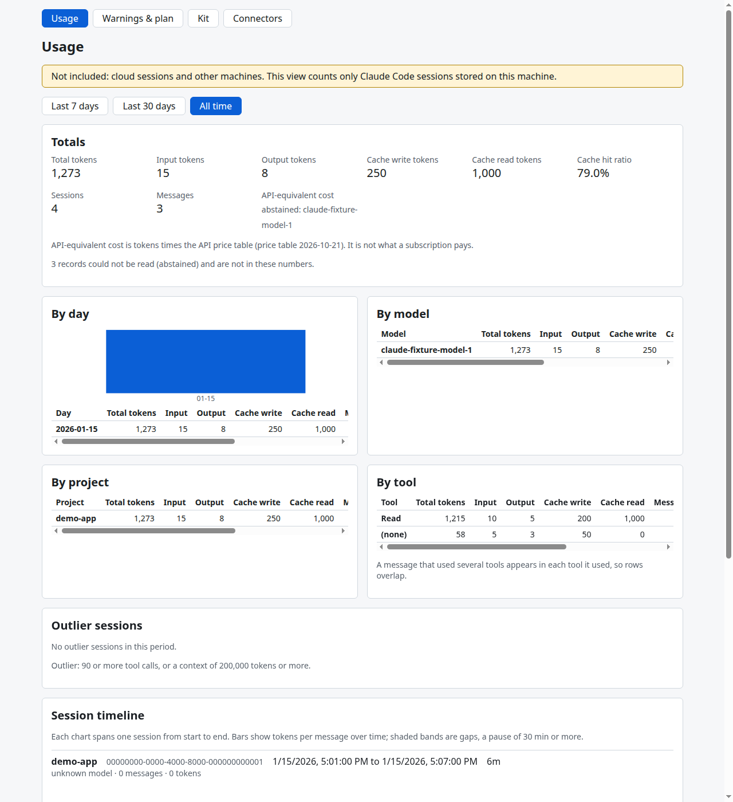
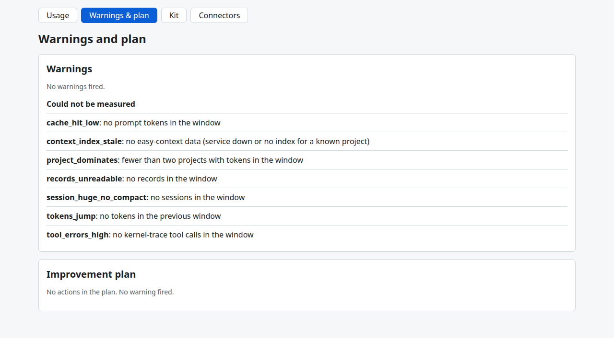
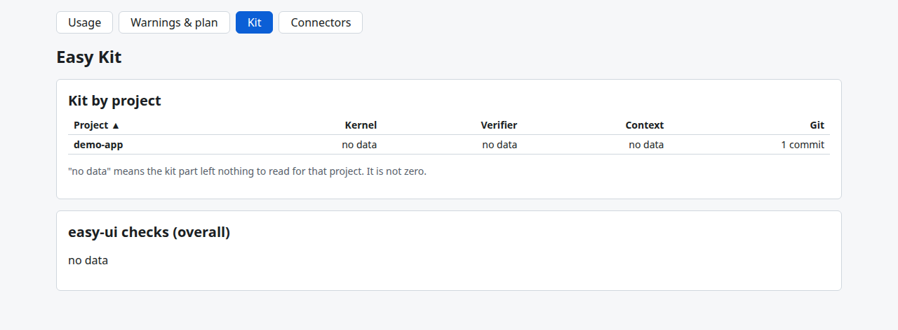
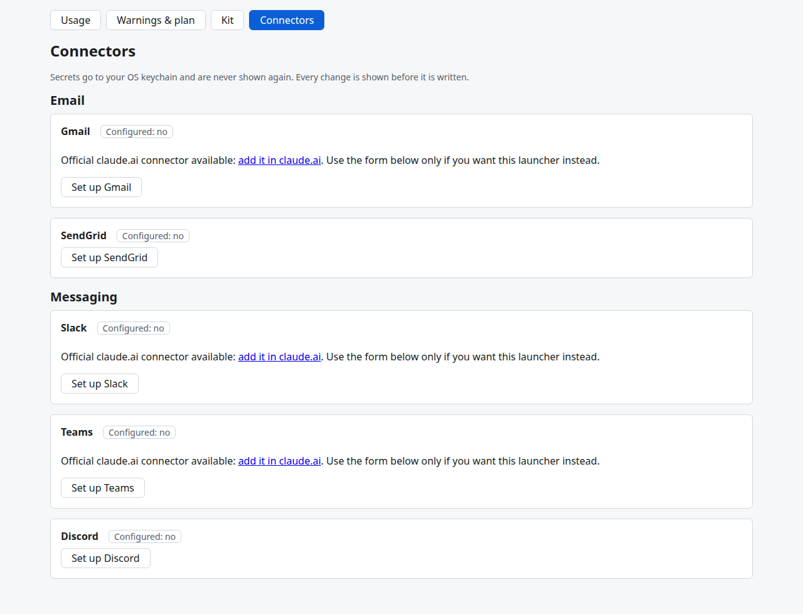

easy-personal-mcp
The Easy Kit plug-in about you, not a repo: it turns your local Claude Code activity into usage numbers, warnings and an improvement plan, and manages your personal tool connectors.
Everything runs on your machine. It reads metadata only: token counts, model, time, project folder and tool names. It never stores message text. A kit part is one of the Easy Kit tools that leave files for it to read: the kernel, easy-verifier, easy-ui or easy-context.
View on GitHubThe flow
There are two lanes. The first lane reads your activity. To ingest is to copy metadata into the store. The second lane connects a tool to Claude Code. A connector is a provider, such as Slack, set up for Claude Code with its secrets kept in the OS keychain. The launcher is the small command that Claude Code starts for a connector.
Read
Files are only read, never changed. Nothing leaves your machine.
- transcripts + kit reportsClaude Code session files and the files that kit parts leave behind.
- ingestCopy metadata into the store. Message text is dropped.
- local storeOne SQLite file on your disk. It keeps history after Claude Code deletes old sessions.
- MCP · CLI · dashboardThree ways to read the same numbers. The dashboard listens on 127.0.0.1 only.
Connect
A secret goes to the keychain once. It is never in a config file or a command line.
- catalog formPick a provider and fill in its fields, in the dashboard or the CLI.
- OS keychainThe secrets are saved in the keychain of your operating system.
- claude mcp add-jsonThe official Claude Code command registers
easy-personal-launch exec <id>. - launcherIt reads the keychain and passes the secrets to the provider server as environment variables.
The dashboard
Run easy-personal dashboard to open it. These screenshots use test fixtures, not real usage. The project demo-app is made up.




Install and deploy
You need Python 3.11 or newer, uv and Node.js. The dashboard page is built from web/ and is not in git, so build it before you install. It runs natively on Linux.
Install
git clone https://github.com/thunderkds/easy-personal-mcp.git cd easy-personal-mcp npm --prefix web ci && npm --prefix web run build uv tool install --reinstall --no-cache .
Check the install:
easy-personal --version easy-personal ping
First run
Claude Code deletes old transcripts after 30 days, so ingest often.
easy-personal ingest easy-personal usage easy-personal warnings easy-personal plan
Register the MCP server
Then restart Claude Code. The server speaks stdio by default.
claude mcp add --scope user easy-personal -- easy-personal mcp
Open the dashboard
It runs an ingest, then starts the page on 127.0.0.1 with a new token each time. Press Ctrl-C to stop.
easy-personal dashboard
Schedule
A systemd user timer runs ingest every day.
easy-personal schedule install easy-personal schedule remove
Connectors
Needs the claude CLI on PATH and a keychain backend. Restart Claude Code after a change.
easy-personal connector list easy-personal connector add slack easy-personal connector remove slack easy-personal doctor
Upgrade
Always use --reinstall --no-cache. Without it, uv can reuse an old build of the same version.
git pull npm --prefix web ci && npm --prefix web run build uv tool install --reinstall --no-cache .
Roll back
Back up the store before an upgrade:
cp -p ~/.easy-personal/store.sqlite ~/.easy-personal/store.sqlite.backup
To roll back, remove your connectors and the timer, uninstall the tool and restore the store:
easy-personal connector remove slack easy-personal schedule remove uv tool uninstall easy-personal-mcp cp -p ~/.easy-personal/store.sqlite.backup ~/.easy-personal/store.sqlite
The full deploy, health check and rollback steps, and the common failures, are in the runbook.
Ten MCP tools
None of them writes config or returns a secret.
pingCheck that the server is up.usage_summarySessions, messages and tokens for a period.usage_breakdownTokens grouped by day, model, project or tool.session_outliersSessions with very many tool calls or a very long context.warningsRules that fired, each with its measured value.improvement_planThe fired rules by priority, each with a fix line.kit_summaryWhat the Easy Kit did in each project.connector_catalogThe provider catalog. Never a secret value.connector_statusWhether each connector is set up, as yes or no.connector_suggestionsProviders your usage points to, with the counts behind each.
Connector catalog
The catalog has five providers. Yes means Claude.ai has an official connector too. Use the launcher only if you want it instead.
- Gmailclaude.ai connector: yes
- SendGridclaude.ai connector: no
Messaging
- Discordclaude.ai connector: no
- Slackclaude.ai connector: yes
- Teamsclaude.ai connector: yes